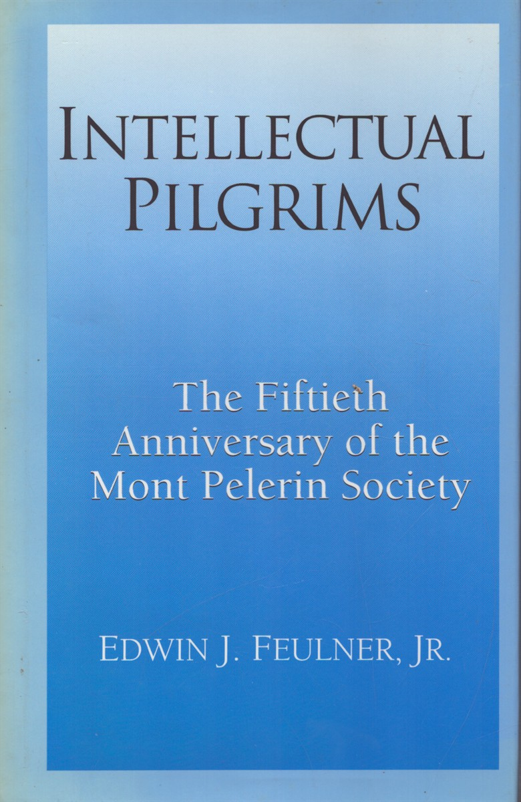

36:30 · 4 OPERE
Il mondo nascosto.
Il filo del discorso
Il contributo presenta lo studio di Bernhard Walpen sulla Mont Pèlerin Society come invito a esaminare i testi e le reti intellettuali che influenzano la politica economica. Il relatore propone di affiancargli un volume di Edwin Feulner, soffermandosi su un passo che interpreta come una dichiarazione programmatica contro lo Stato sociale. La discussione distingue l’esistenza documentata di associazioni, libri e relazioni dalla difficoltà di valutarne l’influenza concreta, anche se il relatore formula su questo punto giudizi molto netti. Una ampia digressione passa alle categorie di patriarcato e matriarcato, al rapporto fra genere e potere e alla scelta personale di rifiutare una carica che implichi decisioni di guerra. I richiami a Obama, Thatcher, Merkel e alla politica italiana servono al suo ragionamento sulle strutture, ma non sono presentati come una verifica comparativa delle loro intere politiche. Nel finale, il tema delle credenziali e della notorietà mediatica conduce alla necessità di leggere ciò che gli autori scrivono, invece di affidarsi soltanto al prestigio. Il racconto della lettera nascosta in evidenza e il tiranno platonico accompagnano la critica. La conclusione propone la compassione come criterio dell’umanità e dello Stato sociale: l’episodio immaginato sugli australopitechi è mantenuto come parabola morale, distinto da una ricostruzione paleoantropologica dimostrata.
I libri nel discorso
Die offenen Feinde und ihre Gesellschaft. Eine hegemonietheoretische Studie zur Mont Pèlerin Society
Copertina: VSA-Verlag, 2004, Schriften zur Geschichte und Kritik der politischen Ökonomie 1, 496 pagine; titolo originale tedesco.
Immagine autentica dell’opera, controllata visivamente; l’edizione di riferimento non è attribuita al filmato.
Bernhard Walpen, titolo tradotto come I nemici aperti e la loro società e sottotitolo sulla Mont Pelerin Society espliciti. Grafia normalizzata sul catalogo VSA 2004.
Passaggio 0:19 ↗ · Fonti e libro ↗
Intellectual Pilgrims. The Fiftieth Anniversary of the Mont Pelerin Society
Identificazione probabile
Copertina: Washington, 1999, 60 pagine, tre discorsi. Edizione a cura dell’autore in ambito Heritage Foundation, con indicazioni editoriali non uniformi nei cataloghi.
Fotografia autentica della sovracoperta azzurra dell’edizione 1999, con titolo, sottotitolo e autore leggibili. I cataloghi descrivono l’impronta come autore o Heritage Foundation; senza colophon esaminato non si uniformano arbitrariamente le due indicazioni. La copia fotografata non è attribuita al relatore.
Feulner, presidenza 1996–1998, volume del 1999 e passi sul welfare: probabile Intellectual Pilgrims, titolo non pronunciato. Identità bibliografica riscontrata presso Heritage, Library of Congress e Walpen.
Passaggio 5:35 ↗ · Fonti e libro ↗
La lettera rubata
Identificazione probabile
Copertina: Mursia · I Picci one · edizione del singolo racconto
Immagine autentica dell’opera, controllata visivamente; non identifica l’edizione usata nel video.
Poe esplicito ma titolo detto come lettera scarlata: la vicenda dell’oggetto nascosto in evidenza identifica probabilmente La lettera rubata, non il romanzo di Hawthorne.
Passaggio 26:59 ↗ · Fonti e libro ↗
La Repubblica
Identificazione probabile
Copertina: Laterza · La Repubblica · edizione con testo a fronte di riferimento
Immagine associata all’ISBN di riferimento e controllata visivamente; edizione e traduzione non identificate come quelle citate o lette nel video.
Platone e tiranno privo di misura espliciti, senza titolo. Riferimento probabile alla trattazione del tiranno nei libri VIII–IX della Repubblica.
Passaggio 27:10 ↗ · Fonti e libro ↗